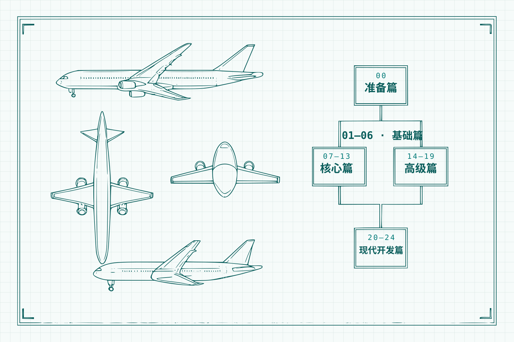

SAP ABAP · 实战二十四课
ABAP Course¶
从零开始的 SAP ABAP 开发实战课程——用 SAP 官方试用镜像与 SFLIGHT 演示数据搭好练习环境，再沿准备、基础、核心、高级、现代开发五个阶段走完二十四课：从 Hello World 一路走到 CDS View 与综合实战。
24 课时 Demo 驱动 SAP 官方 SFLIGHT 数据模型 传统 ABAP → 新语法 → 现代开发

DWG · SFLIGHT 航线与课程系统SCALE 1:24课程阶段¶
-
00
准备篇
官方试用镜像部署、SFLIGHT 演示数据确认、abapGit 导入课程仓库。
-
01–06
基础篇 · 第1-6课
SAP 入门、数据类型、数据字典、内表、Open SQL、调试器。
-
07–13
核心篇 · 第7-13课
选择屏幕、格式化、函数模块、ALV 报表、Excel、面向对象。
-
14–19
高级篇 · 第14-19课
BAPI、增强、外部接口、传输请求、消息处理、新语法专题。
-
20–24
现代开发篇 · 第20-24课
CDS View、OO ALV、BTP 与 abapGit、综合实战航班管理系统。
-
＋
附录
参考资料库（外部链接集中登记）与许可声明。
快速开始¶
- 准备一套 ABAP 练习系统（推荐 SAP 官方试用镜像，Docker 部署）；
- 确认 SFLIGHT 演示数据（官方镜像默认预置）；
- 用 abapGit 把课程仓库 Clone/Pull 到开发包
ZABAP_COURSE。
源码与命名¶
课程代码（zac_* 开发对象）与课文稿都在 GitHub 仓库中维护：对象统一 zac_ 课程前缀，课号不进对象名，命名规范与课↔对象对照矩阵见第0课第四节。
关于作者¶
Jack Liang，ABAP 开发者。课程之外，在个人博客 jack-liang.com 持续更新 ABAP/SAP 实战文章（函数模块 HTTP 化、NWRFC SDK 调 BAPI、SAP 技术雷达等），个人经历与联系方式见关于页。课程的问题与建议，欢迎在任意一课底部的评论区留言。
内容进度 / REV
共 25 课
定稿 3 课 · 12%
初稿 22 课 · 88%